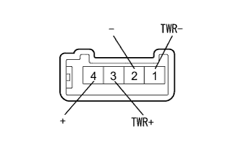
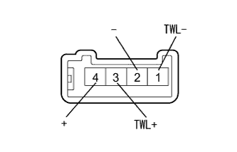

Speaker Assembly Front NO.2 Inspection |
| 1. Inspect Speaker Assembly Front NO.2 |
Check that the speaker installation is not loose or rattling.
Check that there is no foreign matter inside the speaker and that the speaker cone paper is not torn.
 |
Resistance Measurement (RH)
Disconnect the speaker assembly front NO.2 connector.
Using SST (Toyota electrical tester), measure the resistance between the connector terminals.
| Tester Connection (Terminal Symbol) | Condition | Standard |
|---|---|---|
| 4(+) - 3(TWR+) | Always | Below 1 Ω |
| 2(-) - 1(TWR-) | Always | Below 1 Ω |
 |
Resistance Measurement (LH)
Disconnect the speaker assembly front NO.2 connector.
Using SST (Toyota electrical tester), measure the resistance between the connector terminals.
| Tester Connection (Terminal Symbol) | Condition | Standard |
|---|---|---|
| 4(+) - 3(TWL+) | Always | Below 1 Ω |
| 2(-) - 1(TWL-) | Always | Below 1 Ω |
Swap Inspection
Swap with a normal speaker assembly front NO.2 and operate again.